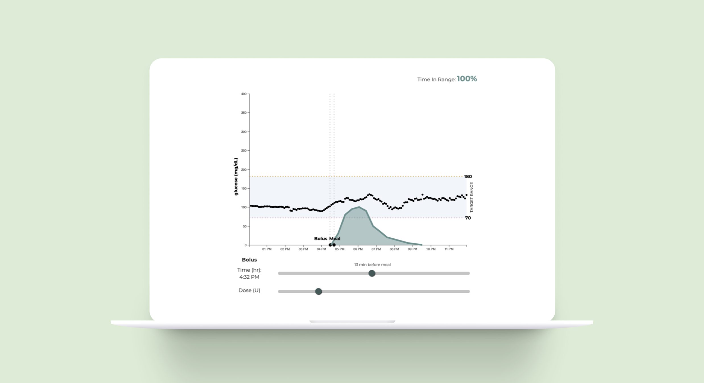
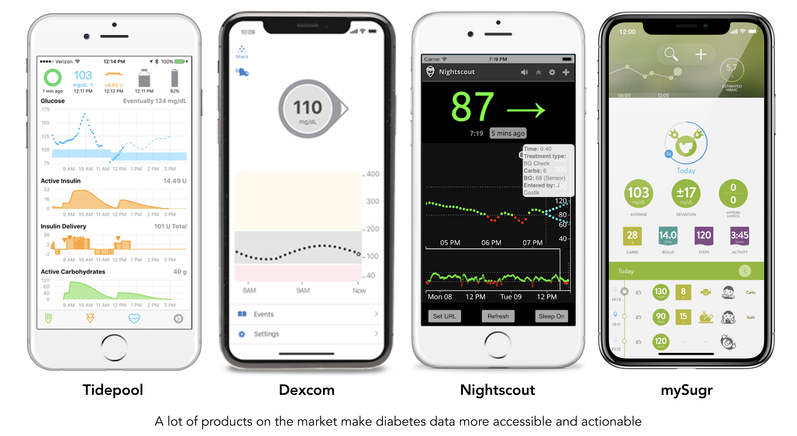
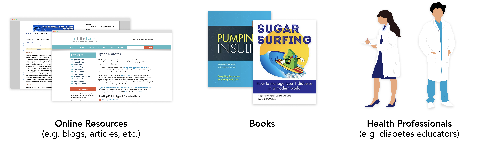
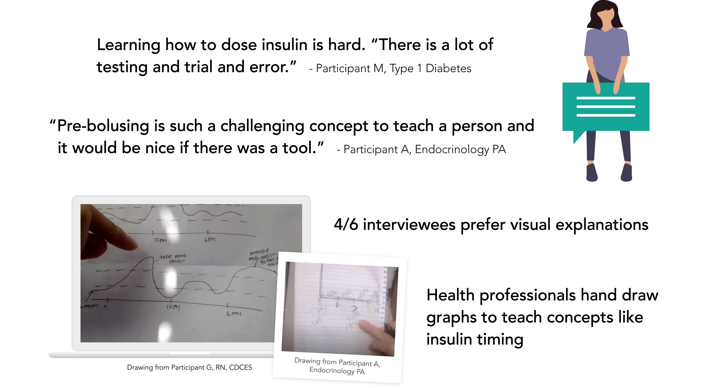
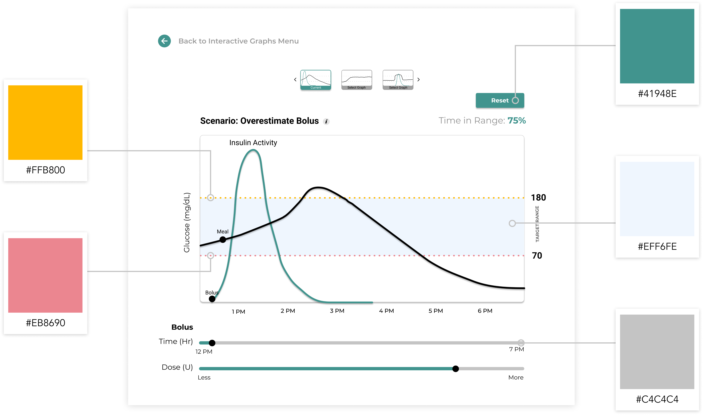
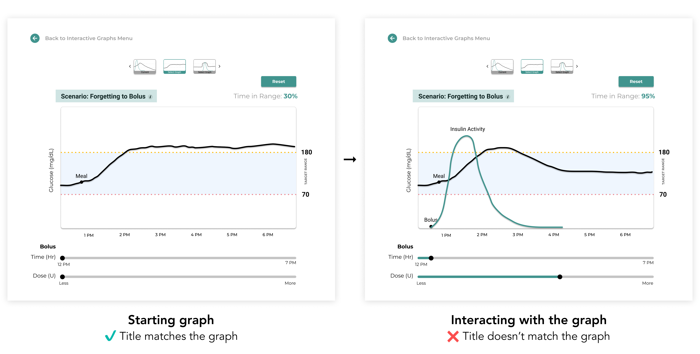
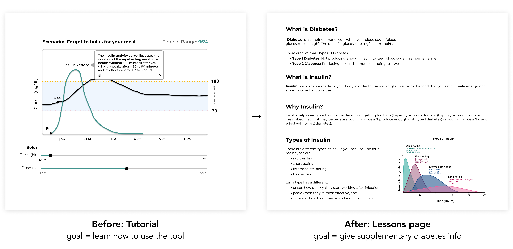
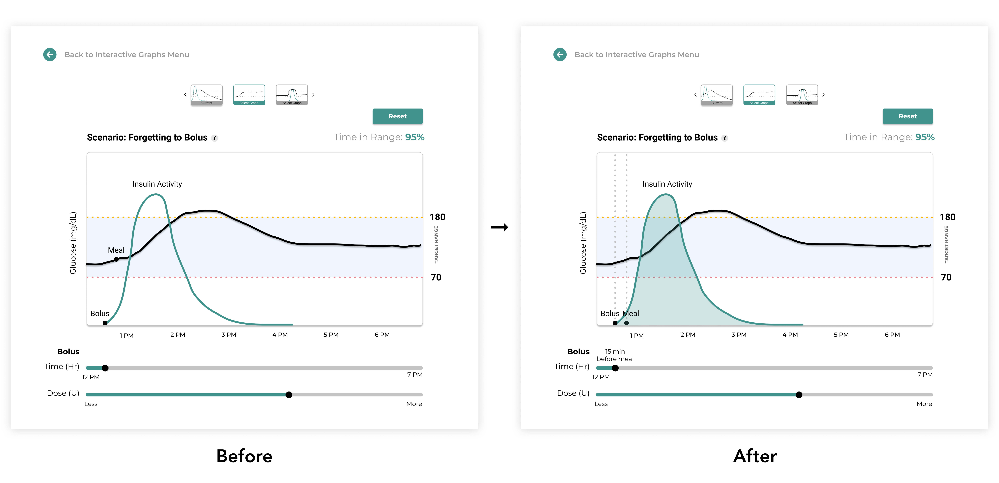
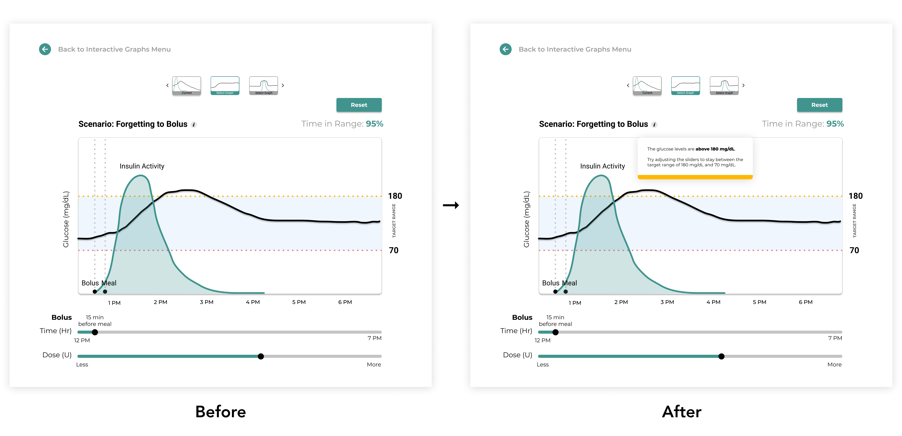
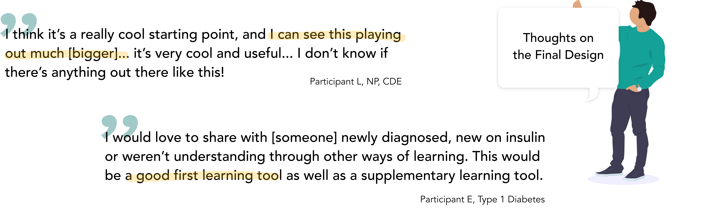

Insulearn

Design Sprint
UI/UX Design
User Tests
Prototype
Website
Stefanie, Vidya,
Stephanie
10 weeks
background
Technology like continuous glucose monitors (CGM) and insulin pumps make large amounts of data available to people with diabetes. Access to this data helps people better understand how diabetes affects their body which allows them to manage it more effectively.

But first they need to learn how to interpret and use this data, and that starts with having a good understanding of the core concepts of diabetes... and that's where we run into trouble!
the problem
There is A LOT to learn about diabetes and how to manage it — from monitoring blood glucose levels and deciding when to take your insulin, counting carbs for complex meals and using formulas, staying physically active, the list goes on and on. So how do people learn about diabetes?

There are a ton of books and online resources, but they're very text heavy with a lot of terminology and formulas that can be very hard to understand without guideance. People can also learn from health professionals, like diabetes educators. Getting to interact with an "expert" and have them explain these concepts can be really helpful and much easier than reading a paper, but they're not always available to talk with you. These problems led my team to this question:
Can we make learning diabetes concepts more interactive and less focused on numbers and text? 🤔 💭
user research
We interviewed 4 people with diabetes and 2 health professionals to gain insight on their experience with diabetes education and what they consider to be the most important diabetes concepts to learn. Here are some of the major insights:

From these interviews, we found that learning how to dose insulin at meals (e.g. prebolusing) to be one of the most important concepts to learn, while also being one of the hardest! To make this concept easier to understand, health professionals use simple visual aids (e.g. hand drawn graphs) with their explanations. These visual aids are really helpful, but repeatedly hand drawing them out is tedious and it's only provided during 1:1 education with health professionals, which isn't accessible to everyone! For these reasons, my team wants to:
🌀 Focus on teaching how to dose insulin at meals (e.g. prebolusing)
🌀 Provide interactive visualizations to support explanations
ideation

Now that we had our focus, we each sketched 8 different ideas in 8 minutes (aka Crazy 8's ideating). Here are the top 3 ideas from all our sketches:

- Inputting Personal Data — Users can generate a 24 hour glucose graph based on age, weight, and gender then input meals, workouts, and insulin doses to see how the glucose curve changes
- Manually Sliding Graph — Users can generate a random glucose curve for a random meal then use sliders to change when and how much insulin gets added
- Choose Your Own Adventure — Users pick a storyline and make decisions that determine the character's actions. At the end, they'll see the 24 hour glucose graph that reflects all the decisions they made
After discussing these concepts as a team and with our mentors, we decided to pursue the manually sliding graphs! This design easily let's people see how different insulin doses change the glucose curve, which we think will be the most intuitive and effective way for teaching how to dose insulin at meals.
early prototypes
We used Figma to build our wireframes and early prototypes. Users could click through an optional tutorial that walks them through an example while pointing out the graph's features, providing definitions, and including disclaimers about our tool through a series of pop-ups.

The Tutorial

The Interactive Graph
After the tutorial, users can choose from multiple starting graphs that show the glucose curve of different scenarios. They can use the insulin time and dose sliders to directly see how different insulin doses affect the glucose curve. The time in range can be found above the graph, since it's becoming more used in diabetes management and it gives people a general idea if their adjustments are improving the glucose curve.
adding color
Most health related companies use cool tones like blue and green to relay a sense of trustworthiness and professionalism, which is why we chose a color scheme revolving around the color teal. We also chose yellow for the target range's upper threshold line and red for the lower as those colors are typically associated with going high and going low respectively.

user testing + key takeaways
After creating a user testing plan and building out a testing environment in Figma, we tested our prototype with 5 people with diabetes and 4 health professionals! The focus for testing was to validate the design as an effective teaching tool and to work out any usability issues. Here are some of the key takeaways:
01 Graph titles don't match the graph once the insulin dose changes
For example, this starting graph is titled "forgetting to bolus" with the graph below to match it. If users move the sliders so that they dose insulin 15 minutes before the meal, the graph now has insulin on it. However the graph is still titled "forgetting to bolus", which testers understandably found confusing.

Solution: Reframe the graph titles to be more general and topic based. For example, change the "Forgetting to bolus" title to "Insulin timing and dosing"
02 Our tool should be easy to understand without a tutorial
With a lot of feedback to add more definitions and disclaimers to our tutorial, it was getting really long, meaning users had to click through a lot of pop-ups which no one likes to do! So as a team we took a step back, remembered that we set a goal to make a tool that's simple and easy to use and came to the conclusion that we shouldn't even need a tutorial.

Solution: Testers liked the definitions and disclaimers found in the tutorial, so we moved them into a supplementary lessons page focused on providing general diabetes information
03 How can we show the potential of insulin better?
Testers wondered if we could better visualize the insulin activity because right now it’s "just a curve that lies on top of the glucose."

Solution: Add visual indicators: 1) shade in the insulin activity curve, 2) add vertical line along bolus and meal points, and 3) add bolus time in relation to meal time above time slider thumb
04 Provide direction when the glucose curve goes above 180 or below 70 mg/dL
A teaching point for this tool is if you correctly time and dose your insulin, you'll be able to stay within target range after you eat. Testers pointed out that this goal of staying within target range is never stated, so people who are new to diabetes may not naturally have that goal in mind.

Solution: When the glucose curve goes above 180 and/or below 70 mg/dL, a pop-up directing users to adjust the insulin to move into target range will appear
the final design
After iterating on the user testing insights, I worked with Vidya to code the final design in HTML, CSS, and JavaScript. View the website
Demo of the final design

next steps
We were fortunate to test our design with people who are very knowledgable about diabetes, which helped us validate the information we were incorporating into our tool. For next steps, we'd love to test with people who are newly diagnosed and/or new to CGM/insulin pumps to validate that that using this tool is an effective and easier way to learn about insulin dosing. Additionally, we see this project as just the first step in the journey of interactive diabetes education. There are so many other topics and factors to that we didn't get to cover, like pump settings, stress, carb counting, pregnancy, complex meals, etc. that we'd love to explore and see if we can visualize them in a way that makes them easier to learn!